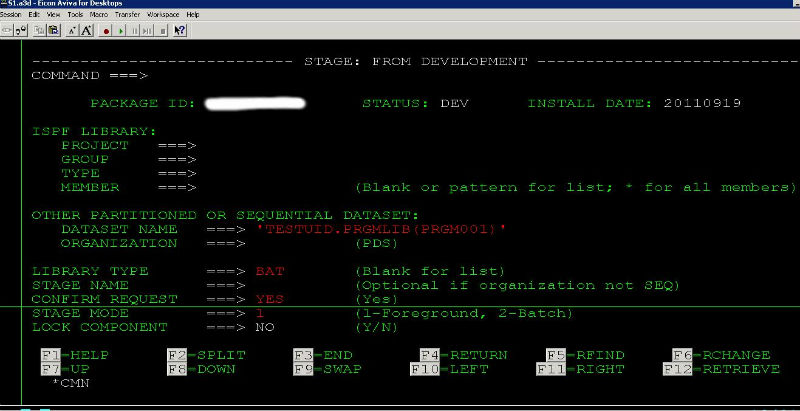

Changeman的Stage和Checkout
2011-11-13
把一个component(比如程序PRGM001)弄到package里面去有两种方法：一是stage，二是checkout。
Stage
所谓的stage就是当生产环境上面没有的，而你要将一个新的component弄到生产上面去的时候用stage。比如生产环境上面没有PRGM001这个程序，如果你最终想把这个程序通过Changeman安装到生产环境，那你就得现在自己的PDS下面建一个名为PRGM001的程序：
TESTUID.PRGMLIB(PRGM001)
然后stage到changeman里面去，具体做法是在ISPF输入:
C;1;5;
输入你的Package ID,回车 在Package前面输入命令：
S1

Checkout
和stage不同，checkout是针对那些已经存在于生产环境里面的components。它们是有版本之分的，比如你要Checkout一个现在已经存在于生产环境的PRGM002,在Package前面输入命令
C1

这里注意一下SOURCE LIBRARY.
SOURCE LIBRARY=0 说明checkout的是当前生产环境baseline里面的最新版本。
SOURCE LIBRARY=-1说明checkout的是比当前生产环境baseline旧的一个版本。
以此类推...
最后，在Package ID前面输入命令S2，查看package里面所有的components(PRGM001和PRGM002)
Category: Mainframe Tagged: z/OS